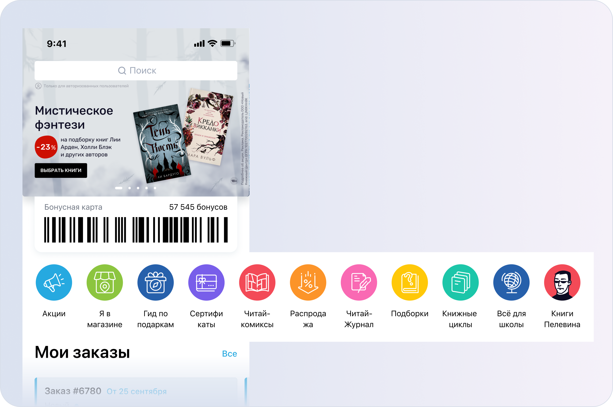
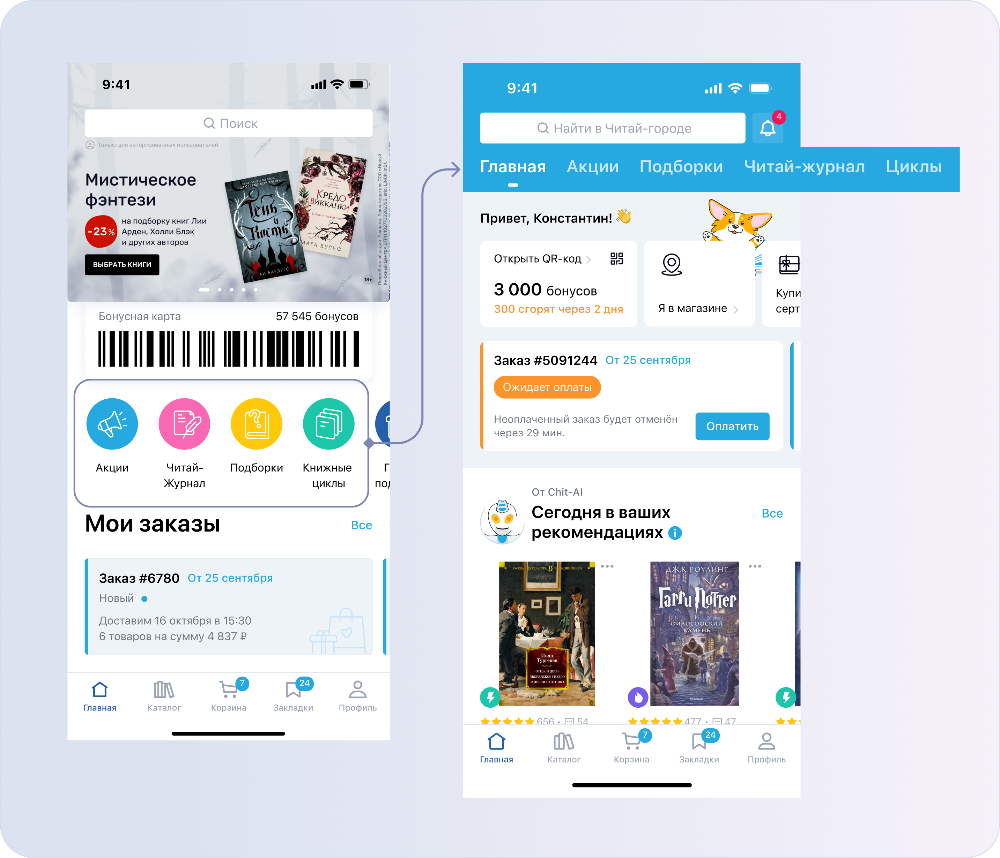
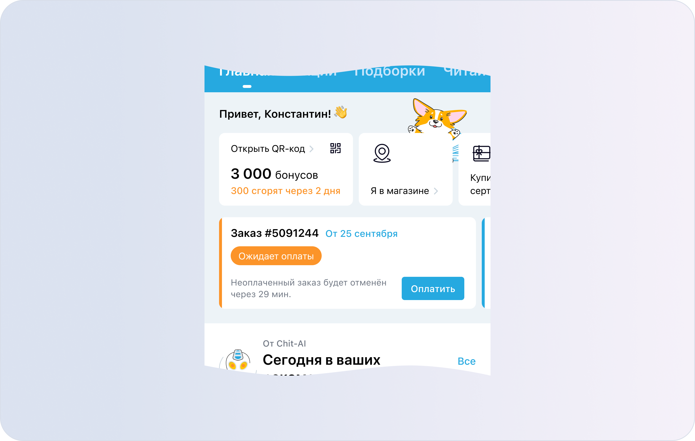
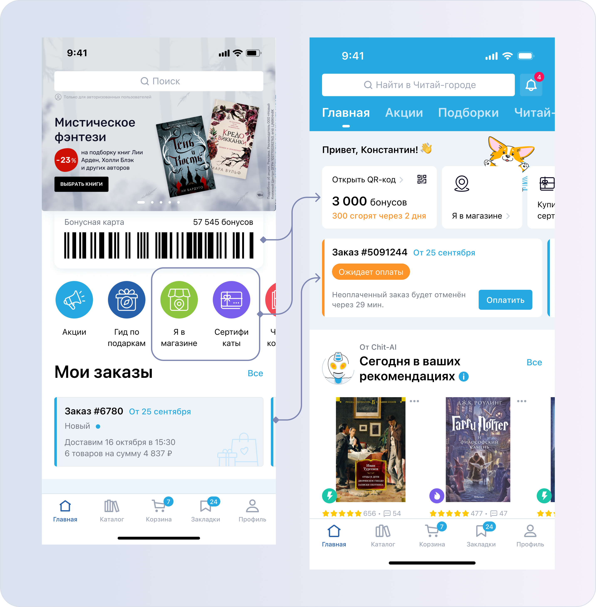

О задаче
Нужно было переработать Главный экран продукта, чтобы он стал более полезным и информативным для пользователей.
В рамках задачи была изменена логика навигации и пересмотрено расположение контентных блоков. Основной фокус был на том, чтобы пользователь быстрее находил ключевые разделы, лучше понимал доступные возможности продукта и получал больше релевантной информации уже на первом экране.
Решение включало обновление структуры главного экрана, перераспределение приоритетов между блоками контента и упрощение пользовательского пути по основным сценариям.
Результаты
- Средние показатели всех полок выросли — в 2 раза увеличился суммарный CR добавления в корзину и закладки
- В 2 раза увеличился CR добавления в корзину из полки «Персональные рекомендации»
- CTR баннеров снизился на 50%, НО так как раздел акций переместился в шапку, то он стал в 3 раза чаще посещаться.
- Навигационные пути не изменились
- После редизайна стало больше положительных отзывов в сторах. Кликабельность элемента «Оцените приложение» выросла в 30 раз — с 17 до 500 кликов.
Моя роль в проекте
Полностью отвечал за продуктовую проработку и дизайн-решение для обновления Главного экрана.
В ходе анализа текущего UX выявил ограничения в навигации и структуре экрана: существующее решение не в полной мере помогало пользователям быстро находить нужные разделы и получать полезную информацию. Для проверки гипотез запросил и проанализировал данные продуктовой аналитики, которые помогли точнее определить проблемные зоны и приоритеты для редизайна.
На основе полученных данных была подготовлена концепция нового Главного экрана: пересмотрена навигация, изменена иерархия контентных блоков и усилена информативность начального вьюпорта. Концепт был представлен дизайн-лиду, а затем продуктовой команде. Предложенное решение получило их поддержку, так как лучше соответствовало пользовательским сценариям и повышало ценность экрана как ключевой точки входа в продукт.
Цели
- Основная цель проекта — повысить ценность Главного экрана как ключевой точки входа в продукт.
- Сделать экран более удобным и полезным для пользователей: улучшить навигацию по разделам, повысить информативность контентных блоков и помочь пользователям быстрее находить релевантные для них сценарии.
- Отдельный фокус был на персонализации: Главный экран должен был лучше адаптироваться под потребности пользователя и показывать более релевантный контент.
Гипотезы
- Если пересобрать навигацию и сгруппировать разделы по более понятной логике, то пользователям будет проще находить нужные сценарии и контент.
- Если разместить блок персональных рекомендаций в начальном вьюпорте, то пользователи быстрее увидят релевантные товары.
- Если убрать баннеры из начального вьюпорта, это не должно негативно повлиять на маркетинговые показатели.
Что было «ДО» редизайна
Блок с разделами был представлен в виде круглых иконок. Со временем количество разделов увеличивалось, из-за чего блок перегружался и хуже сканировался.
В одном блоке были смешаны разные по смыслу сущности: разделы каталога, сервисные сценарии и промо. Навигация выглядела неоднородной, а пользователю было сложнее быстро найти нужный сценарий.

Какие метрики запросил из аналитики
- Данные по полкам — CR в добавление товаров в Корзину и Закладки
Аналитика показала, что полка «Персональные рекомендации» даёт самый высокий CR среди других полок. Это стало аргументом за то, чтобы поднять её выше и быстрее показать пользователю релевантный контент. - Данные по переходам с Главного экрана
Нужно было понять, куда пользователи чаще всего переходят с Главного экрана и какие сценарии уже стали привычными. Это помогло переработать навигацию без риска нарушить основные пользовательские пути.
Популярные переходы: 1) Поиск • 2) Закладки • 3) Профиль • 4) PDP из полок • 5) Корзина - Данные по баннерам — видимость и CTR каждого баннера
Это было нужно, чтобы после редизайна сравнить показатели с новой версией Главного экрана. Из аналитики было видно, чем дальше баннер находился в слайдере, тем меньше пользователей его видели и тем реже по нему переходили.
Что было изменено в интерфейсе
( 1 )
Основные контентные разделы — «Акции», «Подборки», «Читай-журнал» и «Циклы» — были одной сущностью, поэтому я вынес их в шапку в виде табов и расставил по приоритету.
В новой навигации пользователь может свободно переключаться между разделами без возврата на предыдущий экран. Например, посмотреть контент в «Акциях», перейти в «Подборки», а затем сразу открыть другой таб.
Так удалось убрать лишний шаг назад и сделать взаимодействие более непрерывным. Дополнительно в разделах стала сохраняться позиция скролла, поэтому пользователь мог вернуться к контенту с того места, где остановился.

( 2 )
С помощью акцентного фона создал визуальную многослойность и отделил контентную часть от целевых действий пользователя.
Также добавил персонализированное приветствие, чтобы экран воспринимался более живым и обращался к пользователю напрямую. Персонаж Корги усилил это ощущение и добавил дружелюбный эмоциональный тон.

( 3 )
В карусель были вынесены целевые действия: «Открыть QR-код», «ЯвМ» и «Купить сертификат». Это отдельная сущность, поэтому она была отделена от контентных разделов.
Также пользователь сразу видит, сколько бонусов скоро сгорит, без перехода в таб «Профиль».


( 4 )
Остальные разделы с посадочными страницами были перенесены ниже, в блок «Интересные разделы». Это ещё одна отдельная сущность, поэтому она была отделена от контентных разделов и целевых действий.

( 5 )
Если у пользователя нет активных заказов и баннеров активности, полка с персональными рекомендациями попадает в начальный вьюпорт и сразу оказывается в зоне внимания.
В заголовке использовал слово «Сегодня», чтобы показать, что подборка обновляется ежедневно. Это соответствует принципу работы ИИ-модели, которая формирует рекомендации раз в день.
Если персональные рекомендации ещё не сформированы, полка скрывается, а на её месте показывается полка «Новинки».

( 6 )
После существенного обновления Главной было важно объяснить пользователям, что изменилось, и снизить возможное напряжение от нового интерфейса.
Для этого был добавлен информационный баннер и онбординг. В новой структуре появилось подходящее место, где их можно было аккуратно встроить, не перегружая начальный вьюпорт.

Итоги ABC-теста
Был запущен ABC-тест, в котором сравнивали три варианта Главного экрана.
Вариант A — текущий дизайн.
Вариант B — новый дизайн с одной баннерной зоной.
Вариант C — новый дизайн с двумя баннерными зонами, где второй слайдер с другой группой баннеров был добавлен ниже по экрану.
- Средние показатели всех полок выросли — в 2 раза увеличился суммарный CR добавления в корзину и закладки
- В 2 раза увеличился CR добавления в корзину из полки «Персональные рекомендации»
- CTR баннеров снизился на 50%, НО так как раздел акций переместился в шапку, то он стал в 3 раза чаще посещаться.
Детальные экраны акций стали посещаться на 12% реже. Пользователи по‑прежнему переходят к акциям, только теперь делают это не через баннеры, а через сам раздел. Вероятно, часть менее целевых кликов по баннерам ушла, а путь к акциям стал более осознанным и предсказуемым.
Тестируемый вариант с двумя баннерными зонами показал более высокий CTR, поэтому я выбрал его для основной версии Главного экрана. - Навигационные пути не изменились
- После редизайна стало больше положительных отзывов в сторах. Кликабельность элемента «Оцените приложение» выросла в 30 раз — с 17 до 500 кликов.
При этом CTR остался на том же уровне, то есть рост произошёл за счёт увеличения количества просмотров элемента. Мы стали чаще показывать его пользователям и, как результат, получать больше положительных оценок.
Это подтвердило решение вынести кнопку в карусель навигационного блока.
✅ Гипотеза с навигацией подтвердилась
После пересборки структуры ключевые разделы стали заметнее, средние показатели всех полок выросли, а суммарный CR добавления в корзину и закладки увеличился в 2 раза. При этом основные навигационные пути не изменились, значит привычные сценарии не были нарушены.
✅ Гипотеза с персональными рекомендациями тоже подтвердилась
После переноса полки выше CR добавления в корзину из «Персональных рекомендаций» вырос в 2 раза.
✅ Гипотеза с баннерами подтвердилась через перераспределение трафика
Пользователи стали реже переходить через баннеры, но раздел «Акции» стал посещаться в 3 раза чаще, а путь к акциям стал более очевидным.